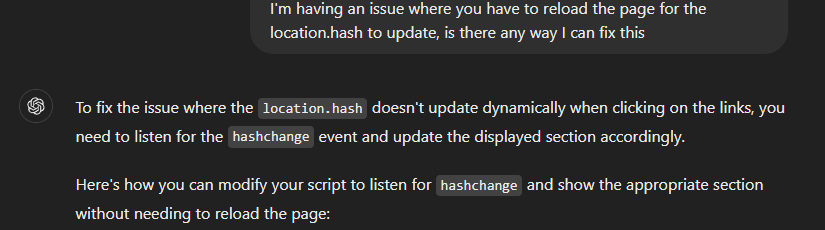

Home
Hello, my name is Christopher Doucette and this site is about the joy in fishing!
Fishing is a wonderful way to connect with nature and relax.
About
Learn about the different types of fish, and why anglers are drawn to the water.
Fishing has been a popular pastime for centuries, enjoyed worldwide.
Prime Hours of Fishing
Knowing when to fish can significantly impact your success.

Early mornings and late evenings are often the most productive times.
Where are the best locations to fish
| Location | Best Species |
|---|---|
| Lake Tahoe | Trout, Salmon |
| Florida Keys | Tarpon, Snapper |
Each location offers a unique experience with a variety of fish species.
Fishing Gear
Essential fishing gear includes rods, reels, and bait suited to the type of fish you're targeting.
Proper equipment can include:
- Fishing Rod and Reel
- Spinning Rods
- Baitcasting Rods
- Fly Rods
- Bait and Lures
- Live Bait (worms, minnows)
- Artificial Lures (spinners, jigs, crankbaits)
- Soft Plastics (worms, grubs)
- Fishing Line
- Monofilament
- Braided Line
- Fluorocarbon
- Tackle Box
- Fishing Hooks
- Sinkers and Weights
- Bobbers and Floats
- Fishing Pliers and Scissors
- Net or Fish Gripper
Why Fish?
Fishing offers relaxation, excitement, and an escape from daily routines.
Many fish for sport, while others find peace and meditation in the activity.
Ai stuff
Section fix
Chat GPT 4.0 mini: I used the prompt "I'm having an issue where you have to reload the page for the location.hash to update, is there any way I can fix this?" to fix location.hash not updating when changing sections
All images are not AI and came from HERE